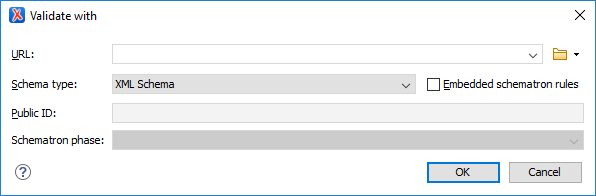

Associating a Schema Through a Validation Scenario
Oxygen XML Editor uses the rules defined in the detected schema to report errors and warnings during automatic and manual validations that help maintain the structural integrity of your XML documents. You can specify the schema to be used for validation directly in validation scenarios and there are several methods that can be used to do so.
Configure a Validation Scenario and Specify the Schema
- Select the
 Configure Validation Scenario(s) from the
Configure Validation Scenario(s) from the  Validation toolbar drop-down menu, or from the
menu (or the Validate submenu when invoking
the contextual menu on a file in the Project view).
Validation toolbar drop-down menu, or from the
menu (or the Validate submenu when invoking
the contextual menu on a file in the Project view). - Click the New button to create a new validation scenario or the Edit button to modify an existing one.
-
Add or configure validation units according to your needs and click the
 Specify
Schema button.
Specify
Schema button.Step Result: The Specify Schema dialog box is displayed:
Figure 1. Specify Schema Dialog Box 
The Specify Schema dialog box contains the following options:
- Use detected schema
- Uses the schema detected for the particular document.
- Use custom schema
- Allows you to specify the schema using the following options:
-
URL - Allows you to specify or select a URL for the schema. It also
keeps a history of the last used schemas. The URL must point to the schema file that can be
loaded from the local disk or from a remote server through HTTP(S), FTP(S) or a custom protocol. You can specify the URL by using the text
field, the history drop-down, the
 Insert Editor
Variables button, or the browsing actions in the
Insert Editor
Variables button, or the browsing actions in the  Browse drop-down list.
Browse drop-down list. - Schema type - Select a possible schema type from this combo box that is populated based on the extension of the schema file that was entered in the URL field. The possible schema types are: XML Schema, DTD, Relax NG, Relax NG Compact, Schematron, or NVDL.
- Embedded Schematron rules - If you have selected XML Schema or Relax NG schemas with embedded Schematron rules and you want to use those embedded rules, select this option.
- Public ID - Allows you to specify a public ID if you have selected a DTD.
- Extensions- Opens a dialog box that allows you to specify Java extension JARs to be used during the validation.
- Schematron phase - If you select a Schematron schema, this drop-down list allows you to select a Schematron phase that you want to use for validation. The listed phases are defined in the Schematron document.
-
URL - Allows you to specify or select a URL for the schema. It also
keeps a history of the last used schemas. The URL must point to the schema file that can be
loaded from the local disk or from a remote server through HTTP(S), FTP(S) or a custom protocol. You can specify the URL by using the text
field, the history drop-down, the
- Select the schema to be associated with the validation unit and configure the rest of the options according to your preferences.
- Click OK on both dialog boxes.
Result: The schema is now associated with that validation scenario whenever it is invoked.
Use the Validate with Action to Specify a Schema for Validating the Current Document
-
Select the Validation with action from the
Validation
drop-down menu on the toolbar (or menu).Step Result: The Validate with dialog box is displayed:
Figure 2. Validate with Dialog Box This dialog box contains the following options:-
URL - Allows you to specify or select a URL for the schema. It also
keeps a history of the last used schemas. The URL must point to the schema file that can be
loaded from the local disk or from a remote server through HTTP(S), FTP(S) or a custom protocol. You can specify the URL by using the text
field, the history drop-down, the Insert Editor
Variables button, or the browsing actions in the Browse drop-down list.
- Schema type - Select a possible schema type from this combo box that is populated based on the extension of the schema file that was entered in the URL field. The possible schema types are: XML Schema, DTD, Relax NG, Relax NG Compact, Schematron, or NVDL.
- Embedded Schematron rules - If you have selected XML Schema or Relax NG schemas with embedded Schematron rules and you want to use those embedded rules, select this option.
- Public ID - Allows you to specify a public ID if you have selected a DTD.
- Extensions- Opens a dialog box that allows you to specify Java extension JARs to be used during the validation.
- Schematron phase - If you select a Schematron schema, this drop-down list allows you to select a Schematron phase that you want to use for validation. The listed phases are defined in the Schematron document.
-
URL - Allows you to specify or select a URL for the schema. It also
keeps a history of the last used schemas. The URL must point to the schema file that can be
loaded from the local disk or from a remote server through HTTP(S), FTP(S) or a custom protocol. You can specify the URL by using the text
field, the history drop-down, the
- Select the schema to be associated with the manual validation and configure the rest of the options according to your preferences.
- Click OK.
Result: The current document is validated using the schema you specified.
 Open Associated Schema action from the toolbar (or
menu).
Open Associated Schema action from the toolbar (or
menu).Use the Validate with Schema Action to Specify a Schema for Validating all Selected Documents
- Select all the documents you want to validate in the Project view .
-
Invoke the contextual menu (right-click) and select the Validate with Schema action from the Validate submenu.
Step Result: The Validate with dialog box is displayed:
Figure 3. Validate with Dialog Box This dialog box contains the following options:-
URL - Allows you to specify or select a URL for the schema. It also
keeps a history of the last used schemas. The URL must point to the schema file that can be
loaded from the local disk or from a remote server through HTTP(S), FTP(S) or a custom protocol. You can specify the URL by using the text
field, the history drop-down, the Insert Editor
Variables button, or the browsing actions in the Browse drop-down list.
- Schema type - Select a possible schema type from this combo box that is populated based on the extension of the schema file that was entered in the URL field. The possible schema types are: XML Schema, DTD, Relax NG, Relax NG Compact, Schematron, or NVDL.
- Embedded Schematron rules - If you have selected XML Schema or Relax NG schemas with embedded Schematron rules and you want to use those embedded rules, select this option.
- Public ID - Allows you to specify a public ID if you have selected a DTD.
- Extensions- Opens a dialog box that allows you to specify Java extension JARs to be used during the validation.
- Schematron phase - If you select a Schematron schema, this drop-down list allows you to select a Schematron phase that you want to use for validation. The listed phases are defined in the Schematron document.
-
URL - Allows you to specify or select a URL for the schema. It also
keeps a history of the last used schemas. The URL must point to the schema file that can be
loaded from the local disk or from a remote server through HTTP(S), FTP(S) or a custom protocol. You can specify the URL by using the text
field, the history drop-down, the
- Select the schema that you want to use to validate all selected documents and configure the rest of the options according to your preferences.
- Click OK.
Result: The selected documents are validated using the schema you specified.